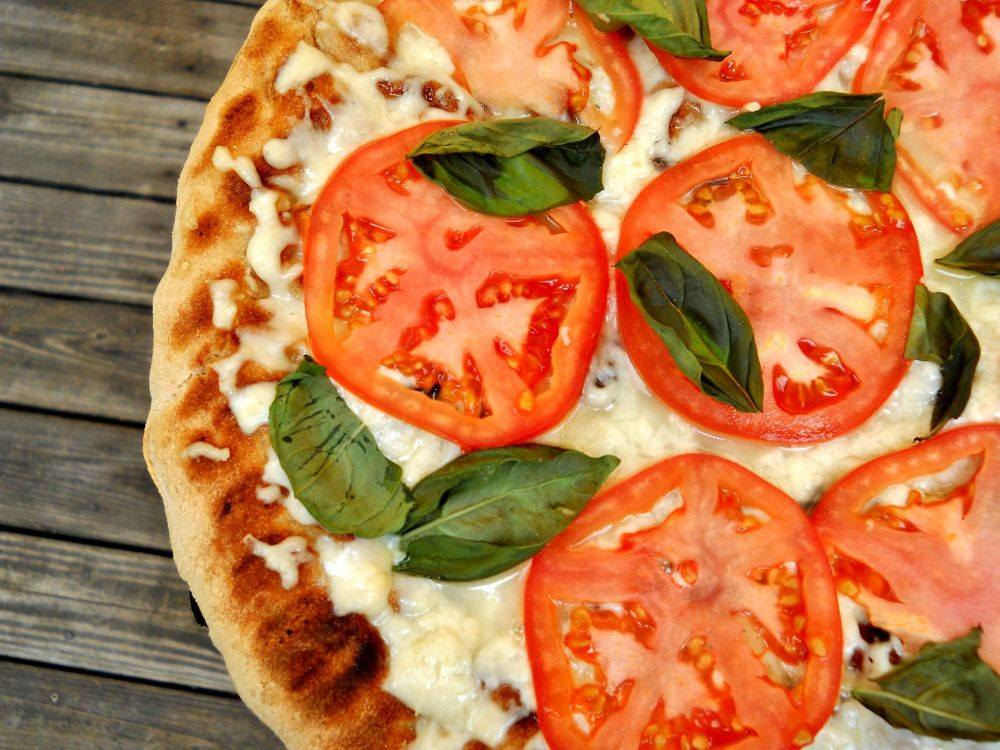

Маргарита, без сумніву, королева піц. Справжній шматочок Італії на вашому столі! Готувати піцу дуже просто, а їсти смачно. Піцу полюбляють діти та дорослі, це ідеальній варіант їжі для домашньої вечірки, ситна та проста страва. Як бачите, лише плюси. Єдиний мінус – Маргарита досить калорійна, та якщо не зловживати (:
Інгредієнти
3 порції (піца ⌀ 30 см)
- Пшенична мука – 1 стакан (130 г)
- Сода – 1/4 ч.л.
- Лимонний сік – 1 ч.л.
- Оливкова олія або будь-яка рослинна – 2 ст.л.
- Сіль – 1/4 ч.л.
- Тепла вода – 70 мл
- Помідори – 3 шт. (приблизно 450 г)
- Оливкова або соняшникова олія – 1 ст.л.
- Томатна паста – 2 ч.л.
- Суха зелень петрушки – 1/2 ч.л.
- Суха зелень базиліку – 1/2 ч.л.
- Суха зелень орегано – 1/2 ч.л.
- Сіль – 1/2 ч.л.
- Молотий чорний перець – 1/4 ч.л.
- Чорні маслини – 15 шт.
- Сир моцарелла або інший сир твердих сортів (обов’язково без сичугу) – 200 г
- Подрібнена зелень петрушки – 1 ч.л.
Вам знадобиться кругла форма для піци 30 см або звичайне деко, вкрите папером для випічки.
Інструкція з приготування Маргарити
Приготування основи
- Просійте миску в муку.
- У столову ложку насипте соди і загасіть її лимонним соком. Вилийте отриману суміш в муку.
- Додайте 1/4 ч.л. солі, 2 ст.л. оливкової олії та теплу воду.
- Замісіть м’яке тісто: воно не повинно бути однорідним й не повинно прилипати до рук.
- Накрийте тісто плівкою або рушником та залиште на 15 хв. для набухання клейковини.
Приготування томатного соусу
- Залийте окропом і залиште на 5 хвилин. Злийте воду та дайте томатам трохи охолонути.
- Очистіть помідори. 1 помідор відкладіть, 2 інші подрібніть у блендері.
- У 2-літровій каструлі нагрійте на середньому вогні 1 ст.л. оливкової олії, додайте подрібнені помідори та томатну пасту. Збільшіть вогонь, накрийте кришкою, щоб соус не розбризкувався, й тушкуйте 15-20 хв. до загустіння.
- Додайте сухі трави, 1/2 ч.л. солі та мелений чорний перець, перемішайте, доведіть до кипіння. Зніміть з вогню, відкрийте кришку каструлі та дайте соусу трохи охолонути.
“Збираємо” піцу
- Розкатайте тісто в формі кола. Викладіть його в форму для піци та злегка притисніть до країв, зробивши невеликі стіночки, або просто викладіть тісто на деку.
- Змастіть тісто томатним соусом. Викладіть оливки та нарізані шматочки моцарелли і посипте іншим тертим сиром.
- 1 відкладений помідор обережно поріжте кружечками та викладіть на сир.
- Запікайте Маргариту в розігрітій духовці при температурі 180-200°С потягом 15-20 хвилин. Готова піца має охолонути протягом 5 хвилин. Посипте піцу нарізаною петрушкою, розріжте та одразу подавайте.